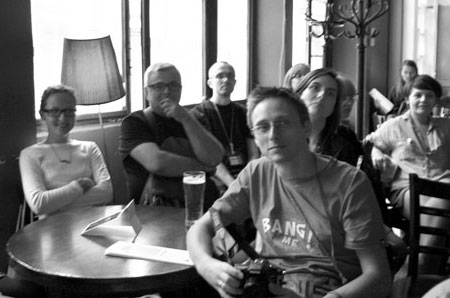

About TypeShorts
TypeShorts is an evenining full of short presentations given in a relaxed atmosphere of a bar or café. TypeShorts format was invented by Czech type designer and typographer David Březina as an informal platform for exchanging knowledge and ideas about different aspects of type design and typography among the local design community, graphic design professionals as well as students.
The aim is to create an independent stage mainly for speakers from Central Europe. Importantly, it is open to less-experienced speakers (e.g. students), local and small-scale projects which rarely receive attention from organizers of large conferences. Thanks to TypeShorts, such speakers can present to wider and possibly international audience, discuss their work, receive feedback and practice their presentation skills in a friendly environment.
The event takes form of short presentations given by students, designers, teachers, researchers; essentially anyone who wishes to share their passion for type and graphic design is welcome. From all received proposals, 10 to 12 speakers will be selected. Each presentation ought to take 321 seconds (ca. 5 minutes), and should be given in English or possibly in Slovak or Czech. Presentations can take any kind of form and approach, from self-promotional to educational, from speech to movie screening. Each presentation is followed by a short open discussion.

Photos from previous events
See photos on TypeShorts facebook page.
TypeShorts™ rules
- The talks are to be presented on a stage in café/bar/pub/gallery. Expect relaxed and informal gathering.
- Each talk lasts exactly 321 seconds.
- We are not going to curate the content of the talks. It is completely up to the speakers if they want to be entertaining or formal, educative, or self-promotional.
- Speakers get one beer or a non-alcoholic equivalent. After their talk!
- Speakers do not need to register and do not need to pay to attend the TypeShorts evening.
- Wearing shorts is not obligatory.
Design © TypeShorts, 2011–13.
Content © Respective speakers, 2011–13.